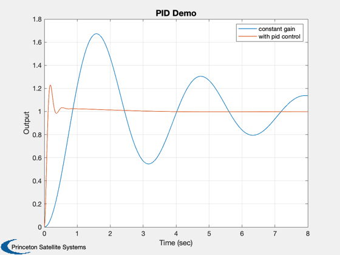

Compare the closed-loop response of a linear system
Compare the closed-loop response with PID control and with constant-gain
feedback.
Uses the statespace class.
------------------------------------------------------------------------
See also statespace, getabcd, ND2SS, PID, SS2ND, TResp
------------------------------------------------------------------------
Contents
default parameters
T = 8;
dT = .001;
kF = 1;
kP = 90;
kR = 5;
kI = 3.5;
omegaR = 18;
KG = 1;
[a,b,c,d] = ND2SS( 4, [1 0.5 0] );
g = statespace(a,b,c,d);
Plant info
[a,b,c,d] = getabcd(g);
[nU,nY] = size(d);
if( nU > 1 )
b = b(:,1);
d = d(:,1);
end
if( nY > 1 )
c = c(1,:);
d = d(1,:);
end
[np,dp] = SS2ND(a,b,c,d);
Constant gain closed-loop
numCG = np*KG;
denCG = dp + [zeros(1,length(dp)-length(np)), np];
[aCG,bCG,cCG,dCG] = ND2SS(numCG,denCG);
gCG = statespace(aCG,bCG,cCG,dCG);
Step-response of constant gain closed-loop
[xCG,yCG] = TResp( gCG, zeros(length(aCG),1), ones(1,floor(T/dT)), dT, T );
Design PID controller
gK = PID( kF, kP, kR, kI, omegaR );
PID closed-loop system
[ak,bk,ck,dk] = getabcd( gK );
[nk,dk] = SS2ND(ak,bk,ck,dk);
npnk = conv(np,nk);
dpdk = conv(dp,dk);
numPID = npnk;
denPID = dpdk + [zeros(1,length(dpdk)-length(npnk)), npnk];
[aPID,bPID,cPID,dPID] = ND2SS(numPID,denPID);
gPID = statespace(aPID,bPID,cPID,dPID);
step-response of lead-lag closed-loop
[xPID,yPID,t,u] = TResp( gPID, zeros(length(aPID),1), ones(1,floor(T/dT)), dT, T );
plot
Plot2D(t,[yCG;yPID], 'Time (sec)', 'Output', 'PID Demo');
legend('constant gain','with pid control');
